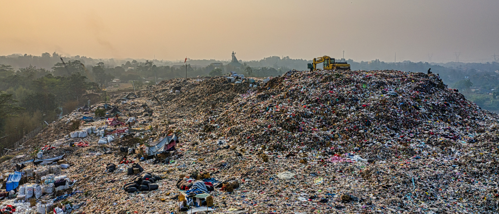
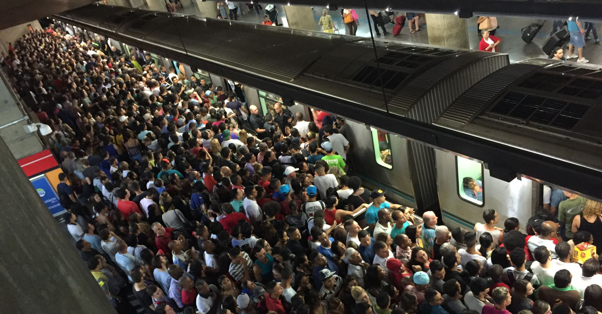
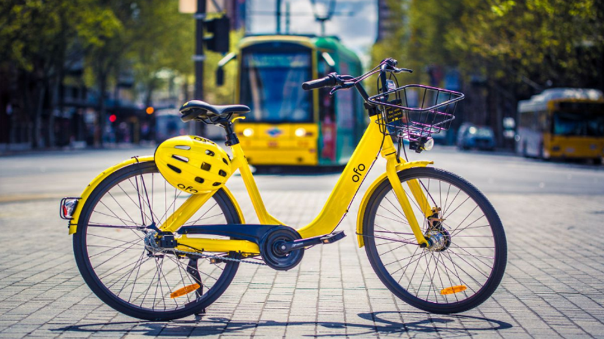

Ambição
Cidades menos poluídas com melhor qualidade do ar,
diminuir a quantidade de carros nas ruas e
aumento do uso do transporte coletivo

Por que?
De acordo com o jornal do Estadão: "A começar pela
conclusão de que, se houvesse uma redução de 10% nos
poluentes na capital entre 2000 e 2020, poderiam ser
evitados nada menos que 114 mil mortes, 118 mil visitas de
crianças e jovens a consultórios, 103 mil a prontos-socorros
(por causa de doenças respiratórias), 817 mil ataques de
asma, 50 mil de bronquite aguda e crônica, além da perda
de atividades em 7 milhões de dias e 2,5 milhões de
ausências ao trabalho. Em apenas um ano (2011) a poluição
da atmosfera contribuiu para 17,4 mil mortes no Estado.".
De acordo com a Cetesb: "A cidade de São Paulo não tem
uma região com a qualidade do ar boa, de acordo com o
boletim da Cetesb (Companhia Ambiental do Estado de São
Paulo) desta sexta-feira (20). São seis estações com
qualidade moderada e quatro ruins. Na capital, Itaquera, na
zona leste, o Pico do Jaraguá, na zona norte, e a Cidade
Universitária e a ponte dos Remédios, na zona oeste,
registram os piores índices de poluição."

Onde?
Grandes centros urbanos.

Para quem?
Além da população no geral, pelo aumento da
qualidade do ar, as empresas de transporte
público, de veículos sustentáveis como as bicicletas
compartilhadas e o SUS, pela diminuição na
quantidade de leitos ocupados, também se
beneficiam com esse projeto.

Objetivo
O objetivo é criar um site que mostra, o tempo que
leva para uma pessoa pegar um transporte publico,
o local das bicicletas e patinetes disponíveis e
variadas opções de aplicativos de carona.

Requisitos
Orçamento, equipe de
programadores, autorização das
empresas de transporte público e
dos aplicativos de carona.

Inovação
Com a intenção de melhorar a mobilidade,
diminuir a poluição nos centros urbanos e seguir
os Objetivos de Desenvolvimento Sustentável da
ONU, como cidades e comunidades sustentáveis
e ação contra a mudança global do clima, o site
desenvolvido irá inovar o acesso ao transporte
nas grandes cidades.